▲ 대왕암공원 출렁다리 위에서 본 보행로. 촬영 시기는 자료에 없다 ⓒ 한국관광공사 · 공공누리 제1유형
"겨울 바다 보러 대왕암공원 출렁다리 건너고 싶은데, 바람 불면 못 건너는 거 아닌가? 어디까지 걸어야 하고 차는 어디에 대지?" 이 글은 2026년 10월 19일 기준으로 대왕암공원 공식 누리집과 한국관광공사 정보, 한국천문연구원 출몰시각을 모아 겨울 산책 일정을 짰다. 핵심은 출렁다리가 303m 길이에 강풍주의보(풍속 14m/s)가 나면 통행이 금지되는 다리라는 점이다. 대왕암공원 출렁다리 공식 안내 바로가기
겨울 동해는 해가 짧고 바람이 세다. 다리가 열려 있는 낮 시간과 일몰 시각을 먼저 맞추면 헛걸음을 줄일 수 있다.
💡 먼저 결론
출렁다리는 매일 09:00~18:00(17:40 입장 마감), 입장료는 공식 누리집에 무료로 표기돼 있다. 강풍주의보·우천·기상특보·해무로 시야가 안 나올 때는 통제되고, 매월 둘째 화요일은 휴장이다. 12월 울산 일몰은 17시 10분대라 입장 마감(17:40) 전에 이미 해가 진다. 울기등대 운영시간은 공식 누리집(상시)과 한국관광공사 정보(10~3월 09~17시)가 달라 현장 확인이 필요하다.
1. 먼저 바로잡기 — 대왕암공원은 어디까지, 무엇이 있는가
대왕암공원은 울산 동구 일산동에 있는 해안 공원이다. 한국관광공사 소개문은 우리나라 동남단에서 동해 쪽으로 가장 뾰족하게 나온 지점에 있고 울기 항로표지소(울기등대)로 유명하다고 설명한다. 울주군 간절곶과 함께 해가 가장 빨리 뜨는 곳 가운데 하나라고도 적혀 있다. 대한민국 구석구석 바로가기
공원 입구에서 등대까지는 600m 송림길이고, 송림을 벗어나면 해안 절벽과 거대한 바위가 이어진다. 등대를 지나 계단을 내려서면 대왕암이 보인다는 것이 한국관광공사 소개다. 공원 안 출렁다리는 해안 산책로의 햇개비에서 수루방 사이를 잇는다.
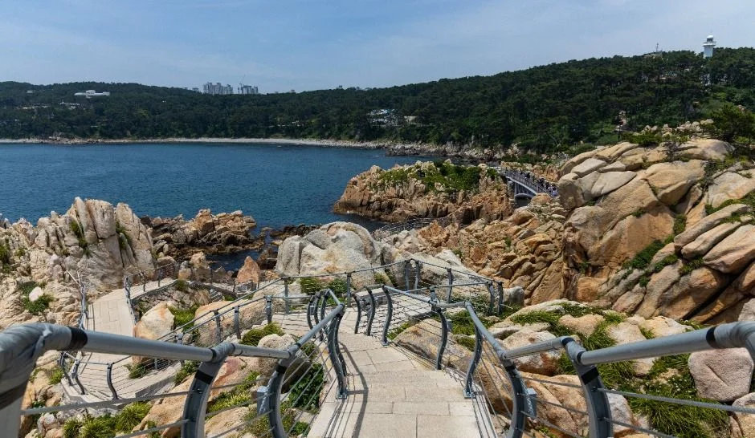
▲ 대왕암공원 해안 바위 위로 이어지는 데크 산책로. 촬영 시기는 자료에 없다. ⓒ 한국관광공사 · 공공누리 제1유형
| 궁금한 점 | 확인한 내용 | 근거 |
|---|---|---|
| 출렁다리 규모 | 무주탑 현수교 길이 303m, 보행폭 1.5m, 높이 42.55m(가운데 27.55m) | 대왕암공원 누리집 |
| 입장료 | 무료(누리집 상세정보 "무료(시범운영 중)", 2022-03 안내문 "무료") | 대왕암공원 누리집 |
| 공원 이용 | 상시 개방, 연중무휴 | 한국관광공사 |
| 대왕암 전설 | 신라 문무대왕의 왕비가 죽은 뒤 호국룡이 되어 대암 밑으로 잠겼다는 전설 | 한국관광공사 |
| 울기등대 이름 | 1906년 일본이 울기(蔚埼)로 부르다 2006년 건립 100주년에 울기(蔚氣)로 변경 | 대왕암공원 누리집 |
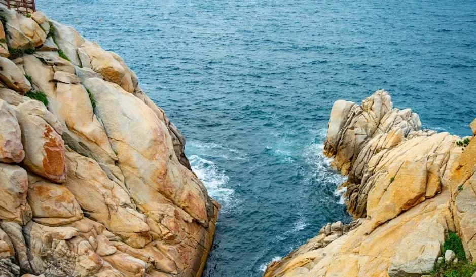
▲ 해안에 맞닿은 거대한 바위 절벽. 촬영 시기는 자료에 없다. ⓒ 한국관광공사 · 공공누리 제1유형
2. 출렁다리 운영 조건 — 강풍 기준이 숫자로 정해져 있다
대왕암공원 누리집 출렁다리 페이지는 "강풍주의보(풍속 14m/s, 순간최대풍속 20m/s)시 출렁다리 통행금지"라고 명시한다. 같은 페이지에서 서울대 풍동실험센터가 2020년 6월 실험으로 최대풍속 64m/s 바람에 대한 안전성을 확인했다고 밝혔고, 출입인원은 최대 1,285명(성인 70kg 기준)이다. 안전성 실험 수치와 통행금지 기준은 별개이므로 "튼튼하니 바람 불어도 열린다"로 읽으면 안 된다. 공식 출렁다리 안내 바로가기
| 항목 | 내용 | 근거 |
|---|---|---|
| 운영시간 | 09:00~18:00, 17:40까지 입장 | 누리집·한국관광공사 |
| 휴장 | 매월 둘째 화요일("둘째 주 아님"), 설·추석 당일 | 2022-03-21 운영 안내(수정) |
| 통제 사유 | 우천, 기상특보(강풍·호우·태풍), 해무 등으로 시야 확보 불가, 감염병·시설 보수 | 2022-03-21 운영 안내(수정) |
| 강풍 기준 | 강풍주의보(14m/s, 순간 20m/s) 시 통행금지 | 누리집 출렁다리 페이지 |
| 야간 | 야간 개장 없음, 야간 출입 금지 | 2021-12-31·2022-03-21 안내 |
| 금지 사항 | 반려동물, 음주 후 이용, 하이힐, 음식물 반입, 흡연, 휠체어 이용 불가 | 2022-03-21 운영 안내(수정) |
| 문의 | 출렁다리 052-209-3767, 공원 052-209-3738 | 누리집 |
공지의 일부는 2021~2022년에 올라온 것이다. 2026년 4월 24일에는 5월 12~14일 시설 보수로 출렁다리를 임시 통제한다는 공지가 올라와 있어, 정비로 갑자기 닫히는 일이 있다는 점도 확인된다. 2026년 임시 통제 공지 바로가기 방문 전 공원 누리집 공지사항을 한 번 보는 편이 안전하다.
▲ 출렁다리 위에서 본 보행로. 촬영 시기는 자료에 없다. ⓒ 한국관광공사 · 공공누리 제1유형
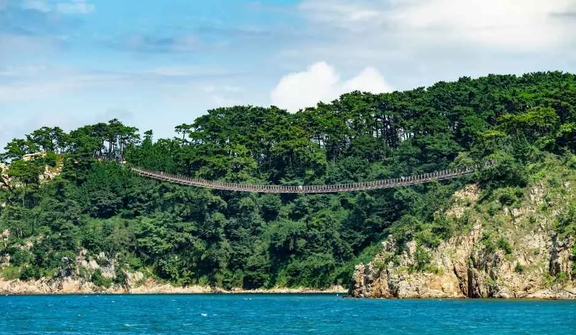
▲ 바다 쪽에서 바라본 출렁다리 전경. 수목이 푸른 계절의 모습으로 보이며 겨울 풍경이 아니다. ⓒ 한국관광공사 · 공공누리 제1유형
휴장일은 매월 둘째 화요일 기준으로 헤아리면 2026년 11월은 10일, 12월은 8일, 2027년 1월은 12일이다. 이는 기사에서 달력으로 계산한 날짜이고 공식 일정표는 확인하지 못했다. 다만 한국관광공사 정보와 동구청 관광 안내의 옛 안내에는 "둘째 주 화요일"로 적혀 있어 달력 주 기준으로 읽으면 2027년 1월은 5일이 될 수 있다. 공원 누리집의 2022년 3월 수정 안내가 "두 번째 화요일(둘째 주 아님)"이라고 명시했으므로 이 글은 이를 따랐으나, 해가 바뀌는 1월 방문 때는 전화로 확인하자.
3. 울기등대까지 걷는 길 — 구간별 거리와 소요 시간
공식 자료에 있는 거리는 공원 입구에서 울기등대까지 600m 송림길이다. 대왕암에서 울기등대까지만 잰 별도 수치는 확인하지 못했다. 대신 공원 누리집이 코스별 소요 시간을 안내하고 있어 이를 표로 정리했다.
| 코스 | 특징 | 소요시간 |
|---|---|---|
| 바닷가길 | 해안선을 따라 슬도까지 이어지는 코스, 몽돌 해변과 전망대 | 약 40분 |
| 전설바위길 | 나무데크를 따라 탕건암, 용굴(덩덕구디), 할미바위 | 약 30분 |
| 송림길 | 1만 5천 그루 송림 사이 산책로 | 약 40분 |
| 사계절길 | 중앙통로 왕벚나무길 | 약 15분 |
| 공원 입구~울기등대 | 송림길 600m(한국관광공사) | 소요시간 공식 수치 없음 |
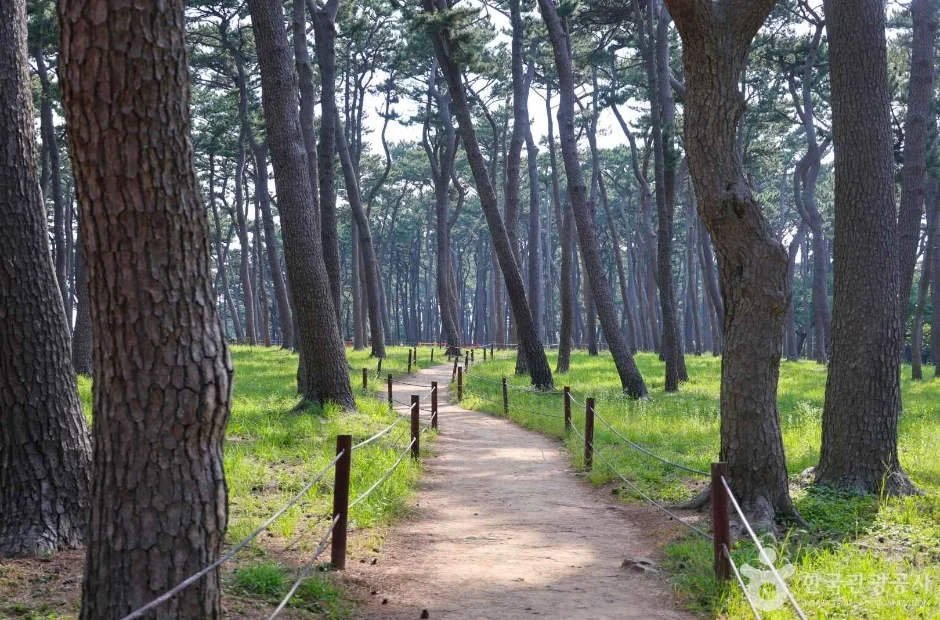
▲ 대왕암 송림의 산책로. 촬영 시기는 자료에 없다. ⓒ 한국관광공사 · 공공누리 제3유형(변경금지)
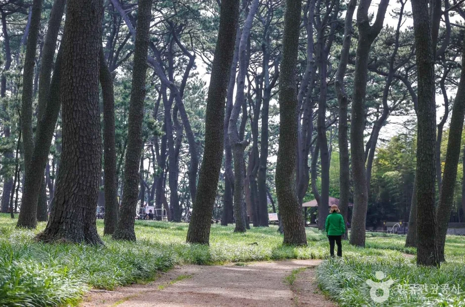
▲ 송림 속 길. 풀이 푸르러 겨울 모습이 아니다. ⓒ 한국관광공사 · 공공누리 제3유형(변경금지)
송림은 한국관광공사 정보에 100여 년 된 아름드리 소나무 숲으로 소개된다. 소나무는 사철 푸르지만 겨울 바람이 그대로 통하는 해안이므로, 바닷가길 쪽은 숲 구간보다 체감 바람이 훨씬 세다고 보고 방한 준비를 하는 편이 좋다.
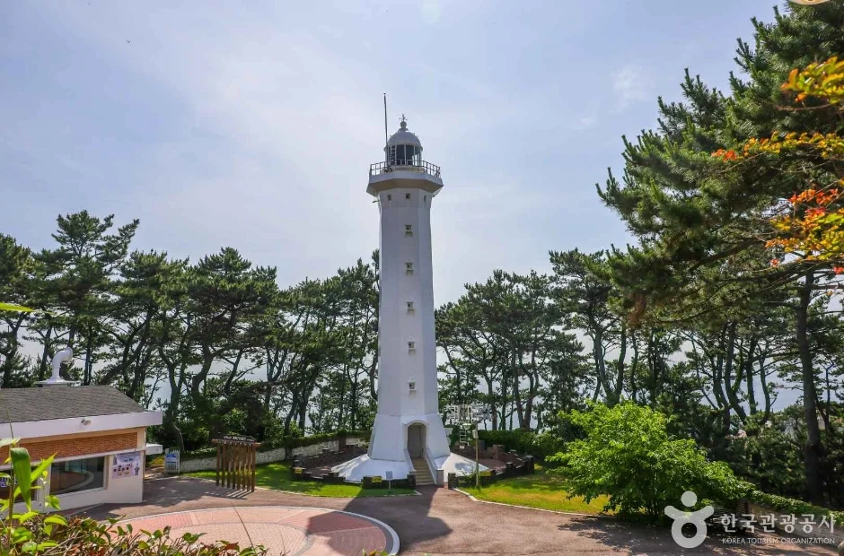
▲ 현재의 울기등대. 촬영 시기는 자료에 없다. ⓒ 한국관광공사 · 공공누리 제3유형(변경금지)
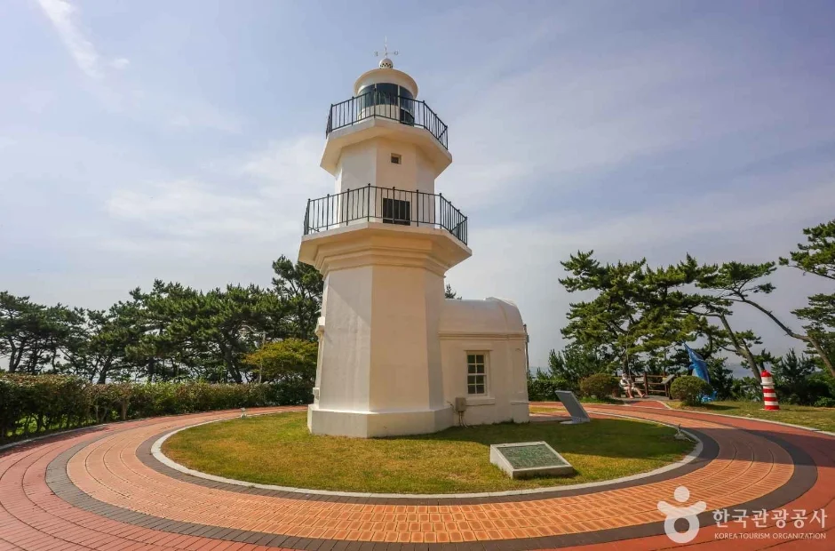
▲ 보존 중인 옛 등대 일대. 촬영 시기는 자료에 없다. ⓒ 한국관광공사 · 공공누리 제3유형(변경금지)
울기등대는 1987년 12월 기존 위치에서 50m가량 옮겨 새로 지었고, 옛 등대는 등대문화유산 제9호이자 등록문화재 제106호로 보존된다고 누리집이 설명한다. 입장료는 무료이고 문의처는 052-251-2125다. 운영시간은 누리집이 "상시개장"으로, 한국관광공사 정보가 "4~9월 09:00~18:00, 10~3월 09:00~17:00"으로 달라서 겨울 방문 전에는 전화로 확인하자.
4. 주차·교통 — 요금은 주차장마다 다르게 안내돼 있다
공원 안내에는 주차 가능 표기가 있지만 주차장별 운영 주체와 요금표는 하나의 공식 페이지에서 확인하지 못했다. 한국관광공사 정보에 올라온 요금을 지점별로 나열한다.
| 지점 | 주차 | 비고 |
|---|---|---|
| 대왕암 송림(등대로 110) | 요금은 현장 확인 (보도: 2023-09-01부터 평일도 유료 전환, 카드 결제) | 공식 요금표를 확인하지 못함. 동구청 문의 또는 현장 안내판 확인 |
| 울기등대(등대로 155) | 가능, 무료 | 한국관광공사 정보 |
| 일산해수욕장 | 평일 2시간·주말공휴일 1시간 무료, 이후 30분당 500원 | 한국관광공사 정보 |
| 슬도등대 | 가능, 무료 | 한국관광공사 정보 |
| 상가주차장 | 2022년 한 해 주말·공휴일 이용 통제 공지가 있었으나 현재 시행 여부는 확인하지 못함 | 공원 누리집 공지(2021-12-31) |
공원 누리집 오시는길은 울산공항에서 112·122·142번 버스로 일산해수욕장 정류장, 태화강역·시외버스터미널에서 1411번으로 대왕암공원 정류장, KTX 울산역에서 5002번으로 일산해수욕장 정류장에서 내리라고 안내한다. 노선과 배차는 바뀔 수 있어 당일 지도 앱으로 확인하자. 주소는 누리집 오시는길에 등대로 140으로, 한국관광공사 정보와 같은 누리집 하단 표기에는 등대로 95로 나와 있어(울기등대 시설안내는 등대로 155) 내비게이션에서는 "대왕암공원"으로 검색하는 편이 헷갈리지 않는다. 공식 오시는길 바로가기
5. 일출·일몰 시각 — 한국천문연구원 울산 자료
아래는 한국천문연구원 월별 해·달 출몰시각에서 지역을 울산으로 조회한 2026~2027년 값이다. 대왕암공원 지점값이 아니라 울산 기준값이다. 한국천문연구원 출몰시각 조회 바로가기
| 날짜 | 일출 | 일몰 |
|---|---|---|
| 2026-10-19 | 06:32 | 17:43 |
| 2026-11-01 | 06:44 | 17:28 |
| 2026-11-15 | 06:58 | 17:16 |
| 2026-12-01 | 07:13 | 17:10 |
| 2026-12-15 | 07:24 | 17:11 |
| 2026-12-21 | 07:28 | 17:13 |
| 2026-12-31 | 07:32 | 17:19 |
| 2027-01-15 | 07:32 | 17:32 |
| 2027-01-31 | 07:24 | 17:49 |
출렁다리는 09:00에 열기 때문에 일출은 다리 위에서 볼 수 없다. 12월 초 일몰은 17시 10분으로, 17:40 입장 마감 30분 전에 이미 해가 진다. 해 질 녘 바다를 보려면 오후 3시 전후에 도착하는 계획이 현실적이다.
▲ 해가 수평선에 걸린 대왕암 일대 장면. 일출인지 일몰인지, 촬영 시기는 자료에 없고 꽃이 핀 모습으로 겨울 풍경은 아니다. ⓒ 한국관광공사 · 공공누리 제1유형
6. 슬도·일산해수욕장 연계 — 같은 동선에 묶는 법
대왕암공원 바닷가길은 해안선을 따라 슬도까지 이어지고 약 40분이 걸린다고 공식 안내돼 있다. 슬도는 방어진 방파제를 따라 걸어서 들어가는 작은 바위섬으로, 1950년대 말에 세워진 무인등대가 있다. 파도가 바위에 부딪칠 때 거문고 소리가 난다 하여 이름이 붙었다는 것이 한국관광공사 설명이다.
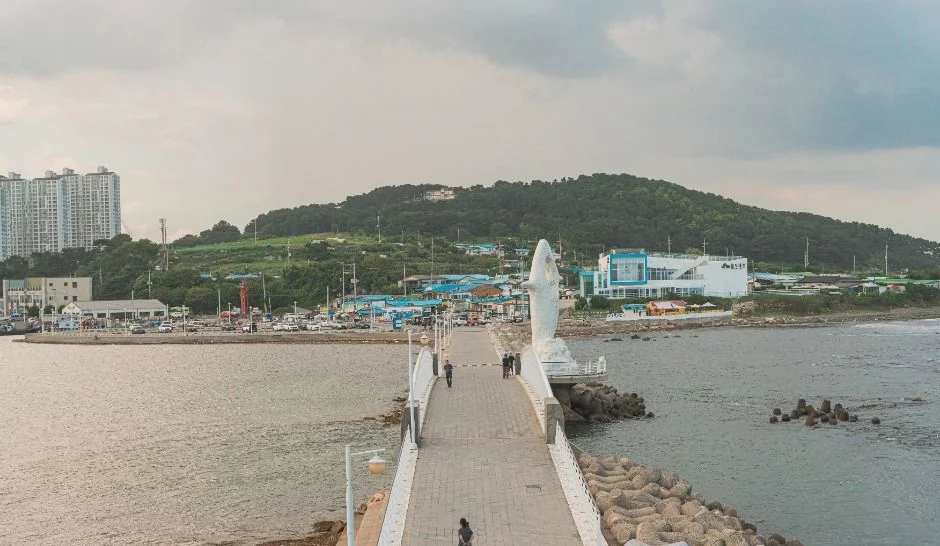
▲ 슬도로 이어지는 방파제 보행로. 촬영 시기는 자료에 없다. ⓒ 한국관광공사 · 공공누리 제1유형
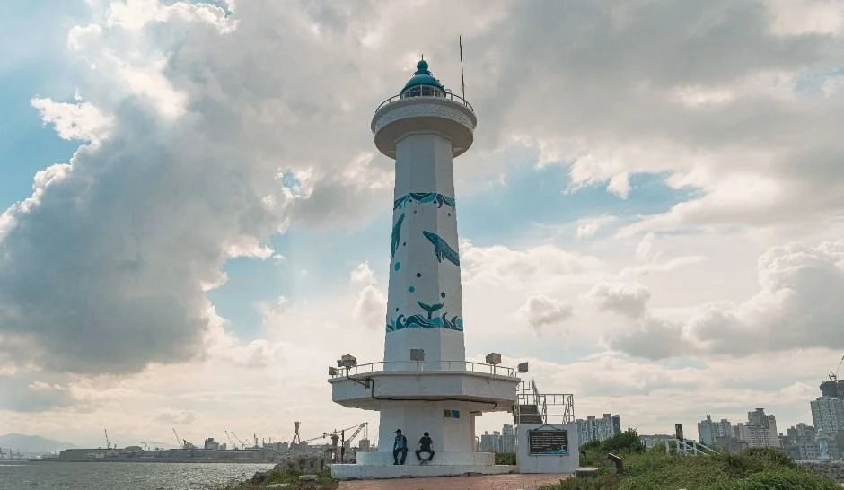
▲ 슬도등대. 촬영 시기는 자료에 없다. ⓒ 한국관광공사 · 공공누리 제1유형
| 곳 | 확인한 내용 | 근거 |
|---|---|---|
| 슬도 | 상시 개방, 연중무휴, 주차 가능. 슬도등대 주차 무료 | 한국관광공사 |
| 슬도아트 | 10:00~18:00, 매주 월요일·1월 1일·설·추석 당일 휴관, 입장 무료, 성끝길 103, 052-234-1033 | 대왕암공원 누리집 |
| 일산해수욕장 | 길이 850m, 폭 42~61m, 상시 개방. 앞바다 어풍대는 통일신라 왕들이 풍류를 즐기던 곳으로 소개 | 한국관광공사 |
| 미르놀이터 | 공원 입구, 문무대왕비 호국룡 전설을 모티브로 한 놀이터, 무료 | 대왕암공원 누리집 |
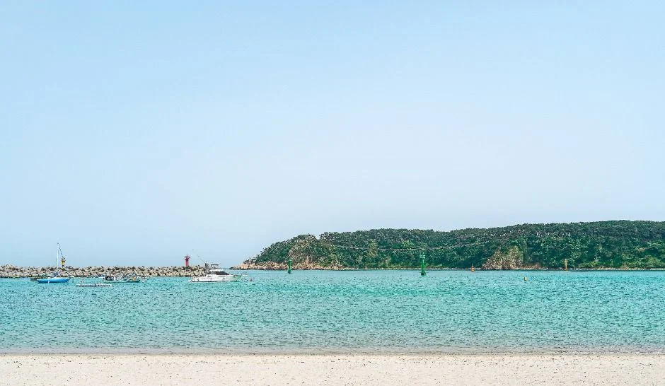
▲ 일산해수욕장 앞바다와 섬. 촬영 시기는 자료에 없고 따뜻한 계절의 모습으로 보인다. ⓒ 한국관광공사 · 공공누리 제1유형
울산의 불꽃축제와 왕생로 빛 거리 행사에서 대왕암공원이 어디에 위치하는지는 울산 불꽃축제·왕생로 빛 거리 교통 가이드에 정리했다. 경주에서 이어지는 해안 드라이브는 경주 문무대왕릉에서 울산 대왕암까지 31번 국도 기사에, 같은 울산의 세계유산 코스는 울산 반구천 암각화 기사에 있다.
7. 겨울 바람 주의 — 공식 기준과 일반 안내를 구분하자
공식 기준으로 확인된 것은 강풍주의보 시 통행금지(14m/s), 우천·기상특보·해무 시 통제, 야간 출입 금지다. 겨울철 기온과 풍속의 지점별 공식 수치는 확인하지 못했다. 아래 점검표 중 "일반 안내"로 표시한 것은 공식 통제 정보가 아니다.
| 상황 | 할 일 | 근거 |
|---|---|---|
| 강풍주의보 발효 | 출렁다리 통행금지. 당일 기상청 특보 확인 후 출발 | 대왕암공원 누리집 |
| 우천·해무 | 출렁다리 통제 사유. 해무로 시야가 안 나올 때도 해당 | 2022-03-21 운영 안내 |
| 일몰 후 | 17시대 일몰, 다리 입장 17:40 마감, 야간 출입 금지 | 누리집·한국천문연구원 |
| 바위·해안 | 난간 밖으로 나가지 않기, 파도가 센 날 바닷가 접근 자제 | 일반 안내 |
| 복장 | 방풍 겉옷·장갑·미끄럽지 않은 신발, 하이힐 금지(다리) | 누리집·일반 안내 |
| 등대 운영 | 10~3월 09~17시로 안내한 자료가 있어 출발 전 전화 확인(052-251-2125) | 한국관광공사 |
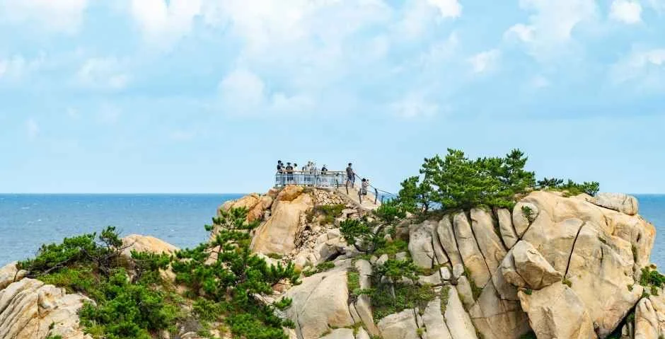
▲ 바위 언덕 위 전망 지점. 촬영 시기는 자료에 없다. ⓒ 한국관광공사 · 공공누리 제1유형
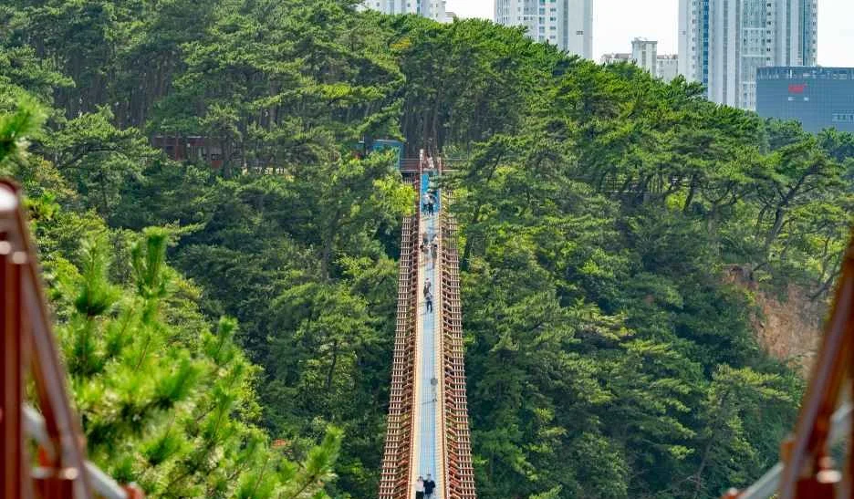
▲ 숲 사이를 지나는 출렁다리. 수목이 푸른 모습으로 겨울 풍경이 아니다. ⓒ 한국관광공사 · 공공누리 제1유형
강풍이 아니어도 다리 위는 바다 위 높이 27~42m라 체감 바람이 육지보다 센 편이다. 소지품(스마트폰 등) 추락 주의와 투척 금지, 음식물 반입 금지가 안전수칙에 들어 있으므로 장갑을 낀 채 스마트폰을 꺼내는 일은 최소화하자.
8. 반나절 겨울 산책 코스 예시
아래는 공식 운영시간과 코스별 소요시간을 합친 예시이며 이동 시간은 공식 수치가 없는 구간이 있어 대략이다. 12월 기준으로 짰다.
| 시간대 | 할 일 | 체크 |
|---|---|---|
| 13:00 무렵 | 대왕암공원 도착, 송림길로 울기등대까지(600m) | 등대 내부 개방 시간 사전 확인 |
| 14:00 무렵 | 대왕암 쪽 해안 데크·전설바위길(약 30분) | 파도 센 날은 난간 안쪽으로만 |
| 15:00 무렵 | 출렁다리 왕복 | 강풍주의보·우천이면 통제, 17:40 입장 마감 |
| 16:00 무렵 | 바닷가길(약 40분)로 슬도 방향 또는 차로 이동 | 일몰 17:10, 해 지기 전 이동 |
| 일몰 무렵 | 슬도 또는 일산해수욕장에서 마무리 | 슬도 무료 주차, 일산은 시간제 요금 |
일출 코스는 정동진 일출 기사와, 차 안에서 일출·일몰을 볼 곳은 일출·일몰 드라이브 명소 기사도 참고하자.
✅ 출발 전 체크
1) 출렁다리 09:00~18:00(입장 17:40), 무료, 매월 둘째 화요일 휴장 2) 강풍주의보(14m/s)·우천·특보·해무 시 통제 3) 12월 일몰 17:10대 4) 대왕암공원 주차장은 2023-09-01부터 평일도 유료로 전환됐다고 보도됐으나(서울경제 2023-08-16) 공식 요금표는 확인하지 못해 현장 안내판 확인 5) 울기등대 운영시간 공식 자료 간 불일치, 전화 확인 6) 모든 사진은 촬영 시기가 자료에 없고 상당수가 푸른 계절의 모습이다.
9. 정리
대왕암공원 출렁다리는 303m 길이에 09:00~18:00(입장 17:40), 무료이지만 강풍주의보(14m/s)·우천·특보·해무 때는 열리지 않고 매월 둘째 화요일은 쉰다. 12월 울산 일몰은 17시 10분 안팎이라 오후 일찍 도착하는 것이 낫다.
주차장별 공식 요금표, 울기등대 겨울철 정확한 개방 시간, 대왕암~울기등대 구간 별도 거리, 공지에 반영되지 않은 현행 휴장 일정은 확인하지 못했다. 2026년 10월 19일 기준 내용이므로 방문 전 대왕암공원(052-209-3738)과 출렁다리(052-209-3767)에 확인하자.